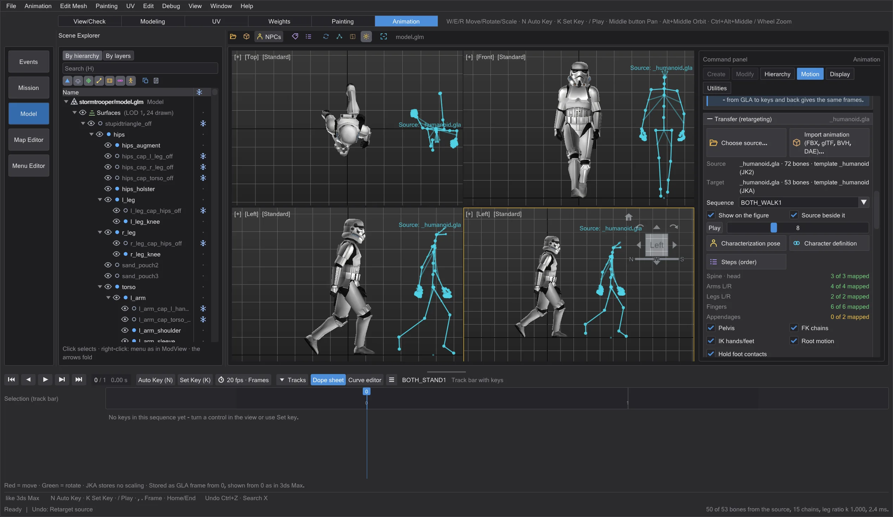
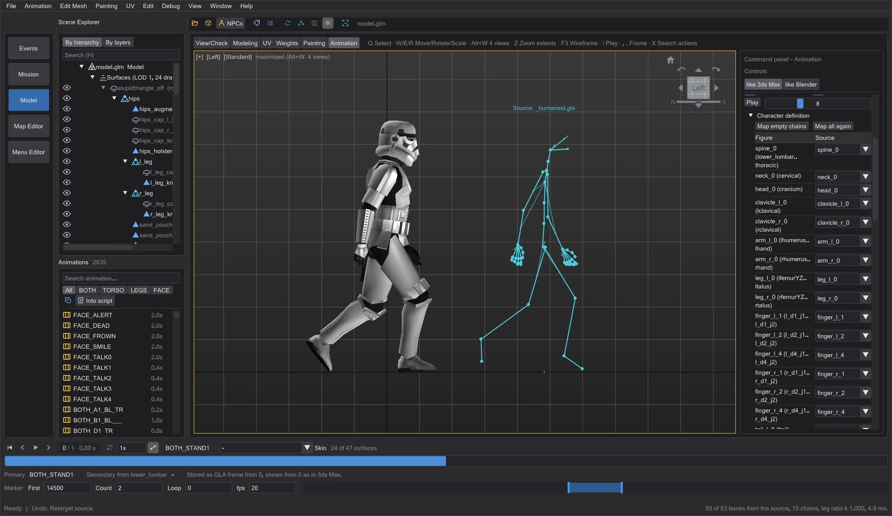
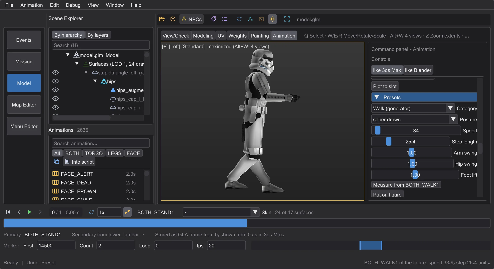

Model tab: retargeting
Give your figure the animation of another skeleton - JK2 to JKA, JKA to a Movie Duels figure, a human walk onto a creature or your own rig - with the same pose, mapped chains, scaled steps, planted feet and the result baked into the GLA of your choice.
Choose the source#
Open your figure in the model tab and go to the area Animation. In the group Transfer (retargeting) of the panel on the right, in the menu Animation > Retargeting, in the right-click of the view (Control Rig > Retargeting) or in the search (X, F3 in Blender mode) choose Choose source: any GLA of the game data or a .gla on disk. Then pick the Sequence of the source (a line of its animation.cfg). Retarget shows the result on your figure at once and the source as a skeleton beside it; Play plays both together. The figure shows the result packed like the game (compressBone): what you see is what the game plays.

Chains and rig templates#
Both skeletons are described by chains - spine, neck, head, clavicles, arms (upper arm, forearm, hand), legs (thigh, shank, foot, toes), fingers and tails. In 3ds Max mode the table is called Character definition (as in MotionBuilder), in Blender mode Bone mapping. It is filled from a template when the skeleton is known: JKA _humanoid (53 bones), JK2 _humanoid (72), the 34 own skeletons of the base game (rancor, wampa, AT-ST, howler, tauntaun, protocol droid and all others, recognised by file name and bone names) and for rigs from other programs HumanIK/Mixamo (mixamorig:...), 3ds Max Biped and CAT. Any other skeleton gets chains suggested by the bone recognition. Chains with the same name are mapped; a different number of bones is spread over the length of the chain, fingers by their number. Change any row by hand (it gets a *); Map empty chains keeps your rows. Twist bones (lhumerusX, lradiusX, lfemurX) take their share of the turn of the forearm or thigh; fingers and the saber tag that hang under the forearm stay with the hand. Mixamo files are not shipped - download them yourself with your account, the template maps them.
The common pose#
Before transferring, source and figure must stand in the same pose (Characterization pose in 3ds Max mode, Rest pose in Blender mode) - otherwise arms and legs come out twisted. The JKA skeleton stands in an A pose (upper arms about 48° down), other rigs often in a T pose. T pose and A pose turn spine and neck upright, arms sideways or 45° down and legs straight down, each limb with the smallest rotation. The rollout shows how far the two poses still differ. Fine-tune a bone of the figure with the buttons X/Y/Z ±5, save the pair under a name and use it again later.
Pelvis, FK, IK, root#
The steps run in the order of the list, as in Unreal: Pelvis moves the pelvis like the source, scaled by k = leg length of the figure / of the source - longer legs take longer steps and the feet do not slide; FK chains turns every bone like its source bone relative to the common pose, the lengths stay your figure's; IK hands/feet pulls hands and feet onto the scaled places of the source (Reach feet and Reach hands from 0 = FK only to 1 = exactly there, as Reach in HumanIK); Hold foot contacts keeps a foot where it touched down while the source foot stands; Root motion moves model_root and Motion like the source, scaled. Move a step with the arrows to try another order. Set k by hand for another stride.

Check and bake#
Under the steps the rollout measures the result: foot sliding is the largest horizontal way of a foot while it stands, in game units, next to the same value of the source (scaled); the bars show it per frame. Jumps are frames in which a bone of the figure turns or moves much more than its source - click a frame number to see it. Plot to slot (Blender mode: Bake to slot) packs the frames like the game with the fps of the source's animation.cfg and puts them on a Slot (BOTH_WALK1, BOTH_CIN_3 ...). In GLA and slots you then build the map GLA (cutscenes, BOTH_CIN_1...), your own mod's _humanoid.gla or your own GLA - an own GLA with a new skeleton loads in single player only. The figure's own animation and its baked GLA stay byte for byte as before when you switch the preview off.
Presets: walk and run generator#
The group Presets (also in the menu Animation > Presets and in the search) makes walk and run cycles with our own generator, so there is no licence question: in the categories Walk and Run choose Walk (generated) or Run (generated) in the list. Speed (the NPCs of the game walk with 90 and run with 300 units per second) and Arm swing stand under the list; Generator shows the rest: Posture (normal, heavy, sneaking, injured, saber drawn), Step length - measured from the figure's own BOTH_WALK1 / BOTH_RUN1 - hip swing and foot lift. Preview on figure plays the cycle at once on the figure; the standing foot lies exactly on the ground and glides evenly backwards like the walks of the game (the game moves the figure), the cycle joins without a seam, the pelvis sinks where both feet have to reach the ground. Put on figure (retarget) bakes it to the slot BOTH_WALK1 or BOTH_RUN1 (or another target slot) like a retargeted animation. The free animations of other authors stand in the same list (see Import animation).
